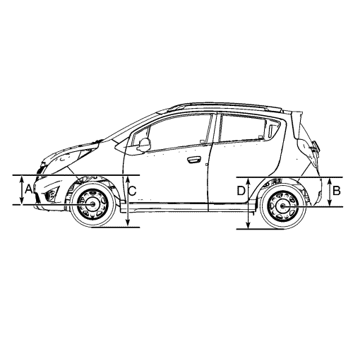

Inspección de la altura del guarnecido
Medición de la altura del guarnecido
La altura del guarnecido es una medición predeterminada relativa a la altura de marcha del vehículo. Las alturas de guarnecido incorrectas pueden provocar que el vehículo toque fondo en baches, daños en los componentes de la suspensión, y síntomas similares a problemas de alineación de las ruedas. Compruebe las alturas del guarnecido cuando diagnostique problemas de suspensión y antes de comprobar la alineación de las ruedas.
Realice lo siguiente antes de medir las alturas del guarnecido:
| • | Compruebe el nivel de combustible. Añada peso adicional si es necesario para simular un depósito lleno. |
| • | Asegúrese de que el habitáculo y el maletero están vacíos, excepto la rueda de repuesto. |
| • | Asegúrese de que el vehículo está en una superficie llana y plana como una cremallera de alineación. |
| • | Compruebe que las puertas del vehículo están bien cerradas. |
| • | Compruebe que el capó del vehículo y las tapas de la cubierta trasera están bien cerrados. |
| • | Compruebe si los accesorios o modificaciones instalados que no son de serie podrían afectar a la medición de la altura del guarnecido. |
Medida de la altura de guarnecido
Nota: Todas las dimensiones se miden de forma vertical desde el suelo. La altura debe estar entre ±10 mm (±39 pulg.) para poderse considerar correcta.

Nota: El vehículo debe estar situado sobre una superficie plana y nivelada.
- Usando las manos, levante el paragolpes delantero aproximadamente 38 mm (1,49 pulg.).
- Retire suavemente sus manos y deje que baje el vehículo.
- Usando las manos, empuje la parte delantera del vehículo hacia abajo aproximadamente 38 mm (1,49 pulg.).
- Retire suavemente sus manos y deje que suba el vehículo.
- Mida y anote la dimensión C. Esta altura se mide verticalmente desde el suelo hasta el reborde inferior de la apertura de la rueda a través de la línea central de la rueda delantera.
- Mida y anote la dimensión A del lado derecho e izquierdo del vehículo desde la parte inferior de la llanta de la rueda delantera hasta el arco de la rueda a lo largo de la línea central de la rueda delantera.
- Compare las medidas de las dimensiones A y C en relación con las especificaciones de altura del guarnecido. Consultar Especificaciones de altura del guarnecido .
- Si las medidas no están dentro del intervalo especificado, sustituya los muelles helicoidales delanteros según se necesite. Consultar Sustitución del refuerzo, componente del refuerzo o muelle .
- Usando las manos, levante el paragolpes delantero aproximadamente 38 mm (1,49 pulg.).
- Retire suavemente sus manos y deje que baje el vehículo.
- Usando las manos, empuje la parte delantera del vehículo hacia abajo aproximadamente 38 mm (1,49 pulg.).
- Retire suavemente sus manos y deje que suba el vehículo.
- Mida y anote la dimensión C. Esta altura se mide verticalmente desde el suelo hasta el reborde inferior de la apertura de la rueda a través de la línea central de la rueda trasera.
- Mida y anote la dimensión B del lado derecho e izquierdo del vehículo desde la parte inferior de la llanta de la rueda trasera hasta el arco de la rueda a lo largo de la línea central de la rueda trasera.
- Compare las medidas de las dimensiones B y D en relación con las especificaciones de altura del guarnecido. Consultar Especificaciones de altura del guarnecido .
- Si las medidas no están dentro del intervalo especificado, sustituya los muelles helicoidales traseros según se necesite. Consultar Sustitución de muelles helicoidales .
| © Copyright Chevrolet Europe. Reservados todos los derechos |